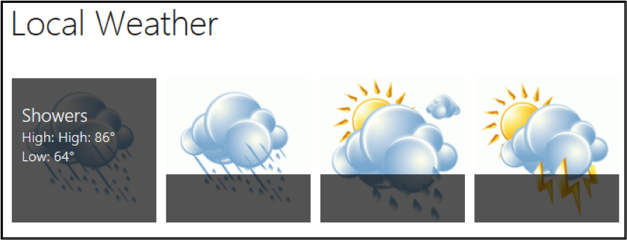

Hands-On Exercise 1.1
MSC SharePoint Site Overview
Exercise list …
Objective
To build two sites for your department using both the web browser and SharePoint Designer.
In this exercise, you will
Review the final solution site with Internet Explorer
The final solution site
1.
Open Internet Explorer.
2.
Go to
http://home.msc.com/msc
.
When the exercises have been completed, your department's site will contain all of the elements found in the solution site.
3.
In the Quick Launch, click
Site Contents
.
4.
Explore the menu of "Lists, Libraries, and other Apps."
5.
Click the
Customers
list. Data in the Customers list and other lists comes from other data sources like SQL Server.
In this example, the direction and color of the arrows is determined based on some simple logic. If the current quarter revenue is greater than the previous quarter revenue, then a green up arrow is displayed.
6.
From the Quick Launch, click the
Local Weather
list. Here a Promoted Links list template is used to display weather information provided by a web service.

7.
From the Quick Launch, click the
Time Off Requests
list. This is the first workflow-enabled list you will develop. Time-off requests that are approved show up in the site calendar.
Congratulations! You have toured an example of the site and features you will create during this class.
This is the end of the exercise.
Viewer version 1.0.1505.28